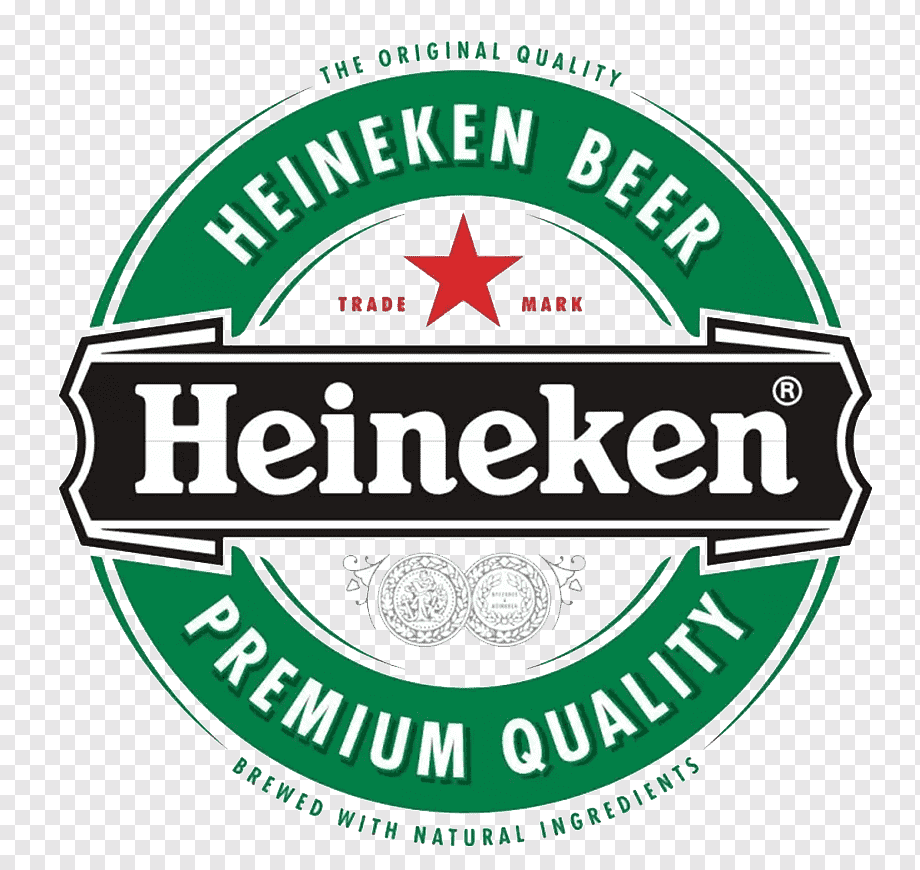
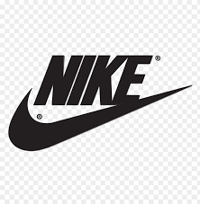
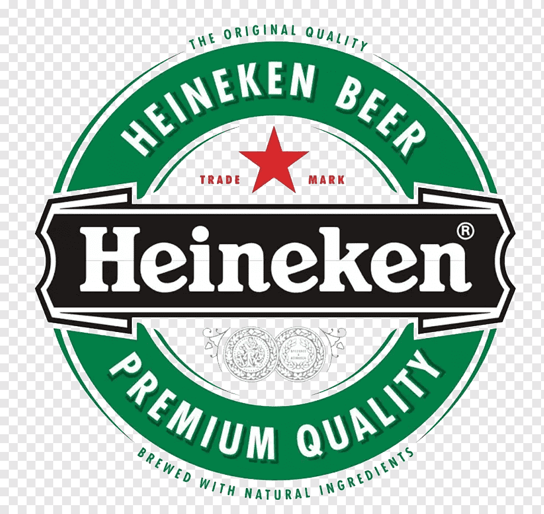
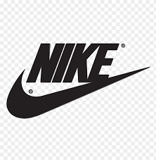

Neymar
Neymar da Silva Santos Júnior (born 5 February 1992), known as Neymar, is a Brazilian professional footballer who plays as a forward for Ligue 1 club Paris

Lionel Messi
An attacking midfielder and captains the Argentina national team. He is currently a free agent, having played all his professional career for La Liga club FC Barcelona,

Cristiano Ronaldo
Portuguese professional footballer who plays as a forward for Serie A club Juventus and captains the Portugal national team.

Paulo Dybala
Dybala began his club career in 2011 with Instituto de Córdoba; he joined Palermo in 2012, at age 18, in a transfer worth a reported €8 million

Mesut Özil
Born and raised in Gelsenkirchen, Özil began his senior club career playing for hometown club Schalke 04, before signing with Werder Bremen in 2008, aged 19.

Mauro Icardi
Icardi began his footballing career at La Masia, the youth system of La Liga club Barcelona, before moving to Serie A club Sampdoria to begin his professional career in 2012

Ángel Di María
At age four, Di María joined Rosario Central. As he had already committed to playing for his local club, Torito, 35 footballs were given in compensation.

Kylian Mbappé
At international level, Mbappé made his senior debut for France in 2017, at age 18. At the 2018 FIFA World Cup

Mohammad Salah
Salah started his senior career with Egyptian club Al Mokawloon, departing shortly thereafter to join Swiss side Basel for an undisclosed fee. In Switzerland

Harry Kane
Born and raised in the London borough of Waltham Forest, Kane began his career at Tottenham Hotspur, where, after fast progression through the team's youth academy

Kevin De Bruyne
De Bruyne began his career at Genk, where he was a regular player when they won the 2010–11 Belgian Pro League. In 2012, he joined English club Chelsea

Philippe Coutinho
Born and raised in Rio de Janeiro, Coutinho showed prodigious talent and excelled in Vasco da Gama's youth system. He was signed by Italian club Inter Milan in 2008
Highllight
The 2021 Copa América Final was a football match to determine the winners of the 2021 Copa América.
Lionel Messi's Best Performance In copa america,He Is the captain of Argentina
Neyamar Best Performance Of Copa america
Our Sponsors
 


